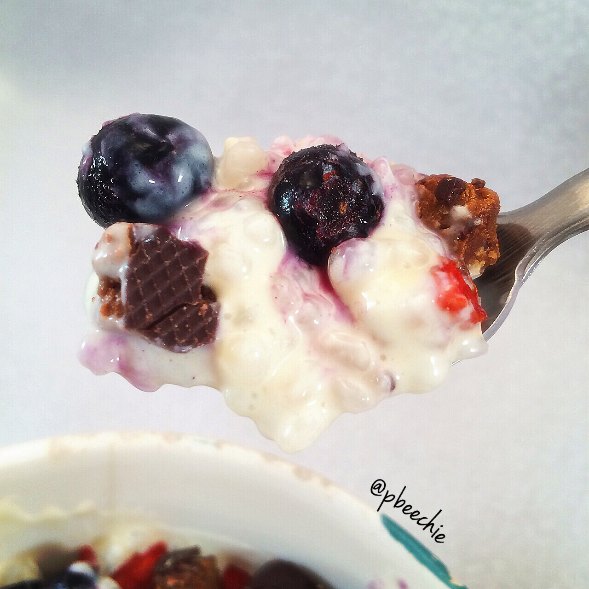

Protein Rice Pudding
Miracle rice is the best thing to happen for volume eaters, I swear. It's a zero calorie food made from plant fiber. I've been making this rice pudding with zero calorie miracle rice and juuuuust yeah. So tastyyyy. I love it so much. I like to use the miracle rice in stir fry, too, but this is my new favorite way now. I don't really like the miracle noodles because of texture, but the rice is an absolute yes for meeee. I get it on iherb. 
- 1 whole bag of miracle rice (2.5 servings)
- 1/2 cup plain Greek yogurt
- 1/2 scoop cinnamon swirl cellucor protein
- 1 TBSP sugar free vanilla pudding mix
- 1/2 tsp vanilla extract
- 1 stevia packet
Rinse off the miracle rice with water. I put it in a strainer with smalllll holes so it doesn't fall out. Then dry it but don't kill yourself trying to - I'm lazy and only dry with approx 31% effort. Then mix in a huge bowl with the remaining ingredients. Stirrrstirstir and it'll be thick and delicious. I topped mine with blueberries, goji berries, and chopped cocoa crunch Square Bars!